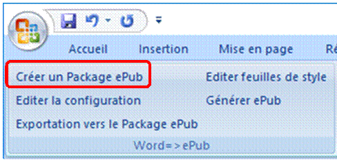
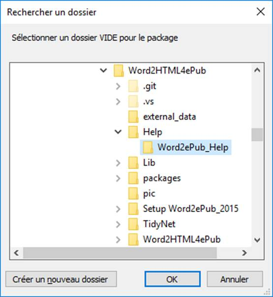
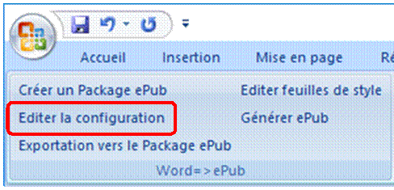
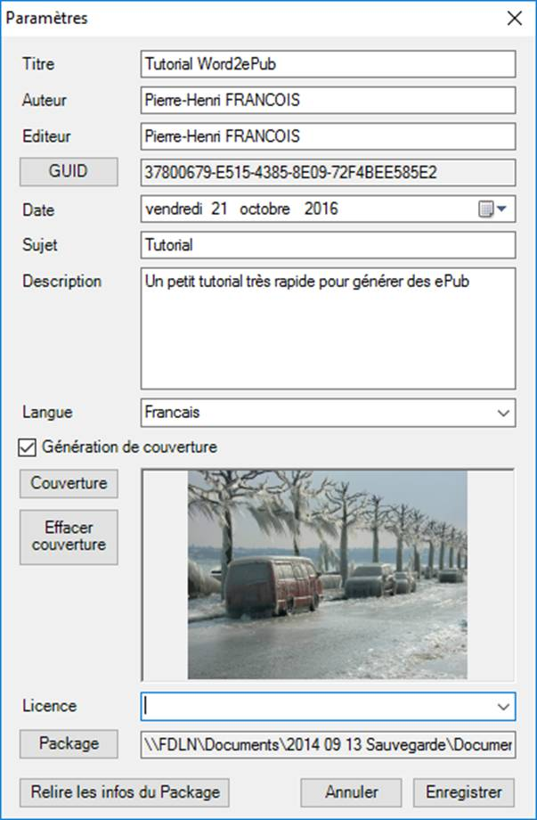
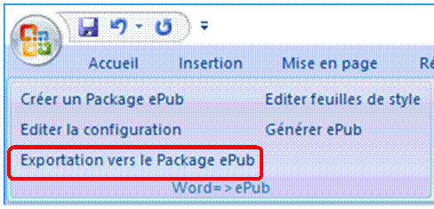

Word2ePub Tutorial
Word2ePub est un Add-In de Microsoft Word (version 2007 et plus).
Word2ePub génère des ebooks au format ePub v3 à partir de simples fichiers Word.
Mais Calibre fait la même chose !
Oui et non… Calibre permet de convertir de façon quasi automatique un fichier word en un ePub v2. Seulement, la mise en forme et les modifications ultérieures ne sont pas simple à réaliser.
De plus, Calibre est gourmant en ressources, et nécessite une installation lourde.
Word2ePub contient un vérificateur d’ePub (ePubCheck) et fait moins de 15Mo (à la date d’écriture de ce tutorial).
Avant de présenter l’interface et le fonctionnement de Word2ePub, il faut dire quelques mots sur la structure du fichier ePub.
Un fichier ePub est :
· un fichier zip, encodé suivant une règle spécifique
· présentant une structure spécifique (un fichier mimetype, un dossier « content », un dossier « Content-INF »)
· Chaque fichiers présent dans l’ePub doit être référencé dans un fichier « content.opf ».
Pour générer un fichier ePub, Word2ePub crée dans un dossier la structure du fichier ePub, puis le compresse. Le tout se fait en 5 étapes simples.
Une fois installé, cet add-In installe un onglet Word2ePub dans le ruban de Word :
Le premier groupe : « Word => ePub » sert à générer des ePub.
Le second groupe : « ePub=> Word » sert à recharger un fichier ePub dans Word, tout en conservant sa structure et ses styles. Cela permet de corriger facilement un ePub, même si l’on a pas le fichier word d’origine, ou si le fichier n’a pas été créé depuis word.
Le dernier groupe : « Word2ePub » regroupe les options de traitement d’image et un petit disclaimer.
Pour générer un ePub depuis un fichier word :
1. Créer un dossier pour la structure de l’ePub. Je vous conseille de créer ce dossier dans le même dossier que le fichier Word. Le nom de l’ePub sera celui de ce répertoire.
2. Cliquer sur le bouton « Créer un Package ePub ».

3. Une fenêtre de sélection de répertoire s’affiche. Sélectionner le répertoire créé à l’étape précédente et appuyer sur OK. La structure du document est alors créée.

4. Cliquer sur le bouton « Editer la configuration ».

5.
Une nouvelle fenêtre s’ouvre : tous les champs sont obligatoires
(sauf licence qui n’est pas utilisé) ! il faudra mettre au moins un
mot…
l’UID est obligatoire.
Je vous conseille fortement d’ajouter une couverture, Word2ePub n’aime pas la
suppression de cette image.
Dans le champ Package, on retrouve le répertoire créé lors de l’étape 3.
Une fois tous les champs remplis, cliquer sur Enregistrer.

6. Cliquer sur « Exportation vers le Package ePub » : le document est sauvé, puis convertit en html, puis nettoyé, les images sont modifiées, les notes de bas de page sont intégrées. Le fichier html est alors coupé par chapitres.

1.